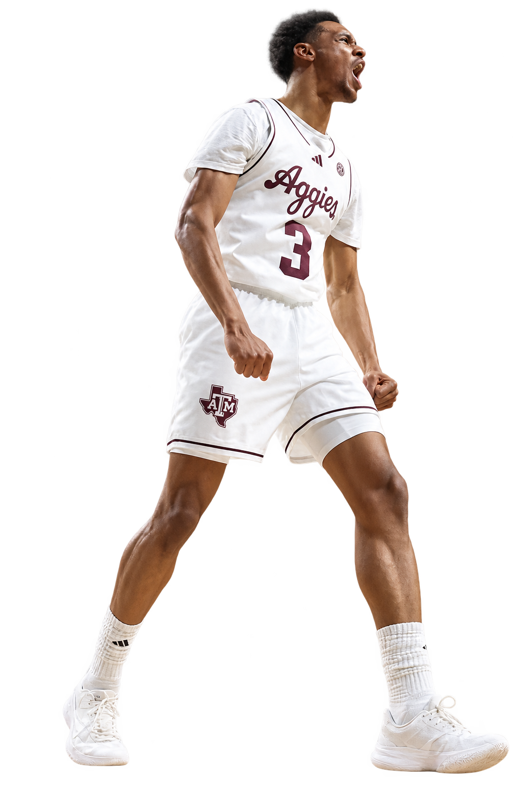

SEC BASKETBALL / REGULAR SEASON FINALE
MARCH 07, 2026 · BATON ROUGE · FINAL / 3OT
24 points for Rylan Griffen
POINTS SCORED · RYLAN GRIFFEN
A CAREER HIGH. AN ALL-AROUND NIGHT.
ETHAN MITO / TEXAS A&M ATHLETICS¹ · AI-ASSISTED BACKGROUND REMOVAL
How the night began.
1H · 15:27 · FIRST FIELD GOAL OF THE NIGHT
Three.
One free throw had already put him on the board.
Then Griffen connected from three. Four points in. Twenty still to come.
FULL-GAME HIGHLIGHTS · NOT AN ISOLATED FIRST-BASKET CLIP
WATCH ON YOUTUBE ↗
TWO HALVES. THREE OVERTIMES.
How all 24
happened.
ATTEMPTS IN RECORDED ORDER · NOT SHOT LOCATIONS
FIRST HALF
Three makes from beyond the arc. Four free throws. Thirteen points to keep A&M in reach.
03 / PERFORMANCE LAB
THE GAME, AT YOUR PACE.
Run it back.
Every scoring action. Every Griffen signal.
Take control of all 55 minutes.
FINAL WHISTLE
Fifty-five minutes. Three points apart.
Texas A&M wins 94–91 in triple overtime.
GRIFFEN / AT THIS MOMENT
Official scoring actions and Griffen’s recorded shots, rebounds, assists, steals and blocks. Step traces hold the last recorded score; this is not a win-probability model. Equal timestamps remain separate actions. Replay advances by action, rather than at real-time game speed. Source: official play-by-play ↗
Loading official play-by-play…
THE PLAYER / ISOLATE THE SIGNAL
Five ways to leave a mark.
RYLAN GRIFFEN / THE SIGNATURE
24Points, accumulated.
Follow every scoring action across 55 minutes. Select a point on the trace to inspect the play.
ELAPSED GAME MINUTES → SELECT A NODE TO INSPECT
LOOK CLOSER
Five from deep.
Griffen hit five of his eight three-point attempts, accounting for half of A&M’s 10 made threes.
FILLED = MADE · OUTLINED = MISSED
Aggregate attempts, not shot locations or sequence.
View Griffen’s complete box score ＋
| MIN | PTS | FG | 3PT | FT | OREB | DREB | REB | AST | STL | BLK | TO | PF | +/− |
|---|---|---|---|---|---|---|---|---|---|---|---|---|---|
| 46:27 | 24 | 7–16 | 5–8 | 5–8 | 1 | 6 | 7 | 3 | 6 | 3 | 3 | 4 | +23 |
SELECT A DIMENSION
One player.
Multiple ways to matter.
5 OF A&M’S 10 THREES
Stretch the floor.
Griffen made half of the Aggies’ three-pointers, shooting 62.5% from beyond the arc.
THE NUMBER BEHIND THE NUMBERS
When he played,
the game changed.
A&M outscored LSU by 23 points with Griffen on the floor—in a game decided by three. Plus/minus describes the team’s scoring margin during his minutes; it does not isolate individual causation.
Read the official box score ↗04 / THE RECORD
Real game. Real numbers.
Stats & story
Official Texas A&M Athletics game highlights · March 7, 2026 ↗Official LSU final box score & play-by-play ↗Texas A&M official game recap ↗The official final box score takes precedence where third-party game logs differ. All displayed statistics refer to March 7, 2026.
Photography & identity
¹ Action photograph: Ethan Mito / Texas A&M Athletics, published with the January 30 Georgia preview. This is an earlier-season photograph at Reed Arena, not the LSU game. The hero uses an AI-assisted background removal of that photograph.
Official logo sourced from 12thMan.com. Aggie Maroon: #500000, per Texas A&M brand guidance.
Private editorial concept; unaffiliated with Texas A&M. Photo and marks remain their owners’ property. No reuse license has been established; permission is needed before wider distribution.